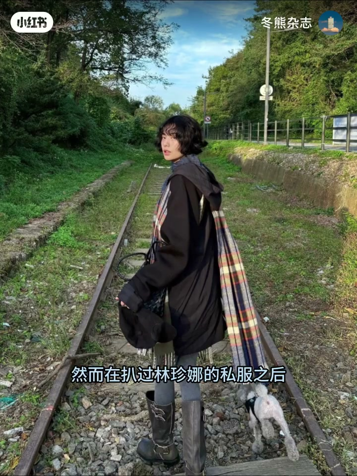
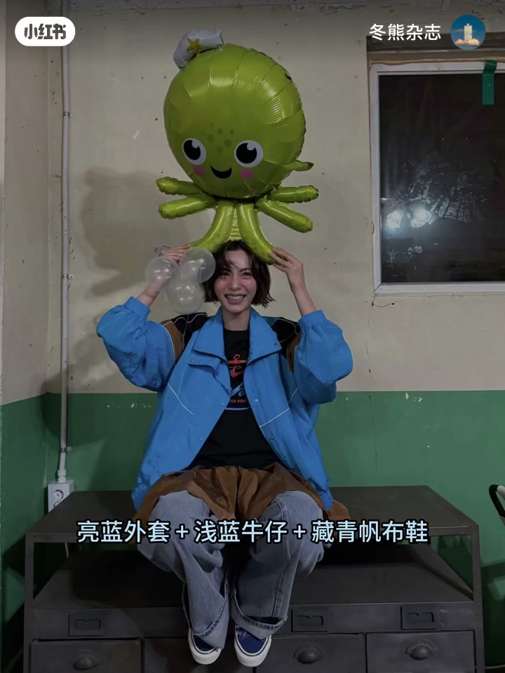
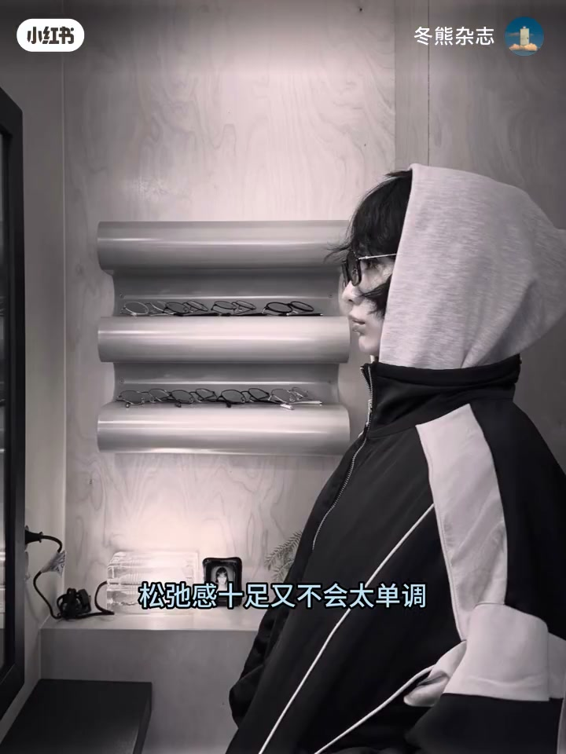
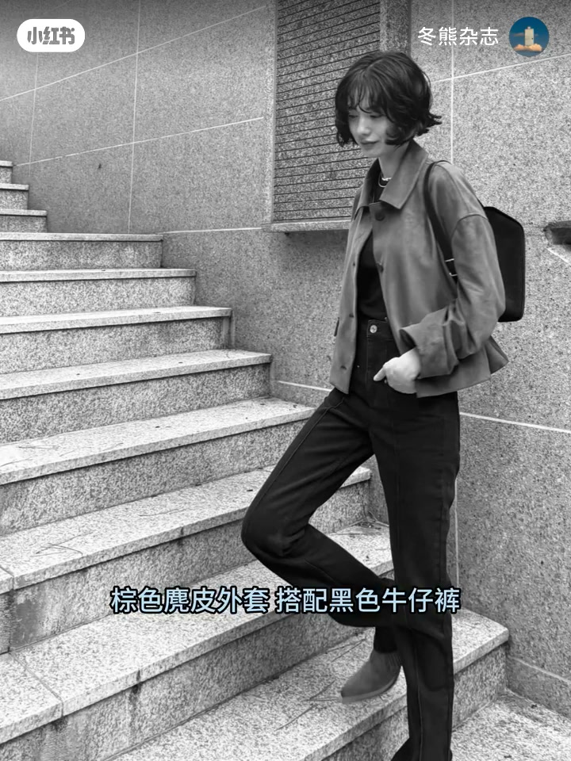
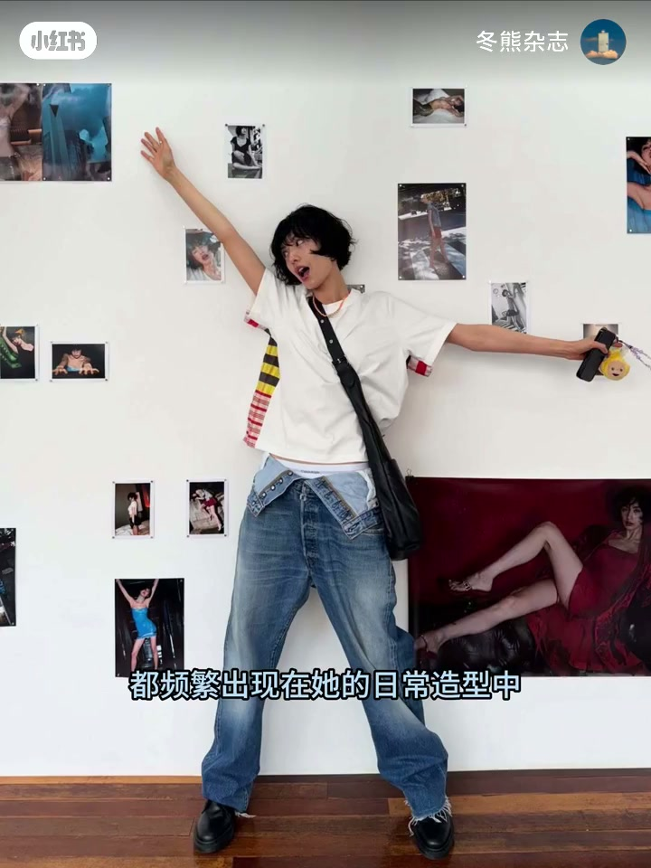
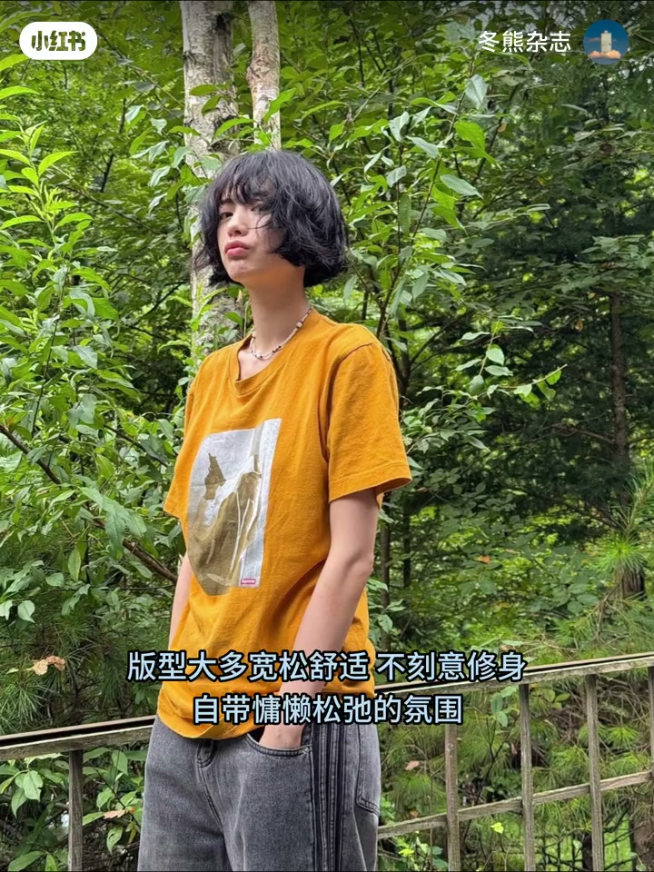

内容要点
韩剧《痊愈之巅》里短发林珍娜高冷帅气，像骄傲又易碎的小狗，和记忆中明艳长发美女形成反差。冬熊扒过她的私服后发现：日常娜娜同样小狗味十足、充满少年感。本期按品类拆解——运动装与叠穿、中短款夹克与 all black、牛仔单品的深浅用法、基础 T 恤的春夏灵感——并指出屏幕里侵略性的美，私下却是呆萌爱笑的可爱女生，普通女孩也能从中拿走可复刻的搭配线索。
知识结构
剧中短发高冷小狗感 vs 记忆里明艳长发；私服同样少年感，本期解析日常反差魅力。
爱穿运动装：亮蓝外套+浅蓝牛仔+藏青帆布鞋；卡其半裙叠穿呼应色块；运动服配连帽卫衣与棒球帽点亮紫色调。
偏爱中短款夹克刻画比例与 clean fit；棕麂皮配黑牛仔裤两色呼应；all black 要皮衣皮鞋包有质感，牛仔裤统一硬朗。
直筒裤、宽松外套、牛仔半裙常客；浅色宜作单品，深色可成套再加点缀或撞色。
纯色/印花宽松 T，或短款抬高腰线；基础款在她手里兼顾舒适与时髦。结语：侵略性荧幕 vs 呆萌私服，下期预告日女博主 Yuka。
林珍娜私服的少年感，靠运动装松弛、中短夹克比例、少色系呼应、牛仔深浅分用法，以及基础 T 的版型选择堆出来；酷不是堆单品，是把舒适做成有层次的 clean fit。
00:00-00:24剧中小狗与私服少年感：同一张反差脸
最近韩剧《痊愈之巅》把视线拉回林珍娜：剧中短发高冷帅气，「像一只骄傲又易碎的小狗」，和记忆里那个明艳的长发美女颇具反差。
扒过私服之后才发现，日常中的娜娜也是小狗味十足、充满少年感。冬熊本期解析她的私服穿搭，感受这位韩国演员日常生活中的反差魅力。

00:24-00:54运动装：舒适不刻意，色块叠穿可复刻
随手点开日常 IG，会发现她真的很爱穿运动装——舒适不刻意，兼具帅气与灵气，日常参考价值很高。例如亮蓝外套加浅蓝牛仔加藏青帆布鞋，整体色系青春感十足；再搭卡其半裙叠穿，与外套同色块呼应，look 更有层次。
宽松运动服和连帽卫衣是绝配，松弛又不单调；棒球帽对应裤子的紫色调，给整体添一分亮色。整套被标成可以轻松复刻的日常穿搭。


00:54-01:22中短夹克与 all black：少色系的 clean fit
已经是模特身材的娜娜，依然偏爱中短款夹克——既刻画身材比例，也透露 clean fit 的简约时髦感。棕色麂皮外套搭配黑色牛仔裤，鞋子和包包分别与两个主单品相呼应；整体只有两个色系，却是经典有格调的不费力穿搭。
all black 同样简约但不简单：皮衣、皮鞋、包包都要选得有质感，牛仔裤统一整体硬朗风格，酷帅气质扑面而来。

01:22-01:46牛仔常客：浅色做单品，深色可成套
牛仔单品是私服常客：经典直筒牛仔裤、宽松牛仔外套、随性牛仔半裙都频繁出现。自带复古休闲属性的牛仔面料，完美适配她独有的少年感气质。
用法上有分工：浅色牛仔更适合作单品搭配；深色牛仔则可以作为套装，同时点缀配饰或撞色感，让牛仔穿搭更有风格。

01:46-02:25基础 T 恤与结语：荧幕侵略性，私下呆萌可学
T 恤穿搭带来更多春夏灵感：偏爱简约基础款纯色或印花，版型大多宽松舒适，不刻意修身，自带慵懒松弛；偶尔用短款 T 打造高腰线，清爽又显利落。简单基础 T 在她搭配下弱化单调感，兼顾舒适与时髦，日常复刻难度极低。
收束对比：屏幕里美得很有侵略性的林珍娜，私下却是呆萌爱笑的可爱女生；简约日常的私服让普通女孩也能拿到搭配灵感。下期预告将转向日女，分享日本博主 Yuka 的高质感延续穿搭。

完整转录（68段）
以下文本由 Whisper medium 模型自动转录，可能存在少量识别误差，已尽可能修正。
最近的一部韩剧《痊愈之巅》
又将许多人的视线拉回到了林真娜身上
剧中短发的她高冷帅气
像一只骄傲又易碎的小狗
和我记忆里那个名艳的长发美女颇具反差
然而在巴过林真娜的私服之后
才发现日常中的娜娜也是小狗味十足
充满少年感
大家好 我是小熊
本期为大家解析林真娜的私服穿搭
感受一下这位韩国演员日常生活中的反差魅力
随手点开娜娜的日常IG
会发现她真的很爱穿运动装
舒适不刻意兼具帅气与灵气
日常参考价值非常高
亮蓝外套加浅蓝牛仔加藏青帆布鞋
整体色系青春感十足
搭配卡其半裙进行叠穿
与外套同色块相呼应的同时
也让整体look更有层次
宽松运动服和连帽卫衣就是绝配
松弛感十足又不会太单调
棒球帽则对应上了裤子的紫色调
给整体增添了一分亮色
是一套可以轻松复刻的日常穿搭
已经是模特身材的娜娜
依然偏爱中短款夹克
不仅完美刻画了她绝佳的身材比例
也透露著clean fit的简约时髦感
棕色几皮外套搭配黑色牛仔裤
鞋子和包包则分别与两个主单品相呼应
整体只有两个色系
却是非常经典有格调的不费力穿搭
all black同样简约但不简单
皮衣、皮鞋、包包都要选得有质感
牛仔裤则统一了整体的硬朗风格
酷帅气质颇面而来
牛仔单品也是娜娜私服里的常客
无论是经典直筒牛仔裤
宽松牛仔外套还是随性的牛仔半裙
都频繁出现在她的日常造型中
自带复古休闲属性的牛仔面料
完美适配她独有的少年感气质
如果说浅色牛仔更适合作为单品进行搭配
那么深色牛仔则可以作为套装
同时点缀一些配饰或撞色感
让牛仔穿搭更有风格
而娜娜的T恤穿搭
则能给我们带来更多的春夏灵感
她偏爱简约基础款纯色或印花T恤
版型大多宽松舒适
不刻意修身自带慵懒松弛的氛围
偶尔也利用短款T恤打造高腰线
清爽又显俐落
简单的基础T在她的搭配下弱化了单调感
坚固舒适与时髦
日常复刻难度极低
没想到屏幕里美得很有侵略性的林珍娜
私下里却是个呆萌
爱笑的可爱女生
她简约日常的私服穿搭
让我们普通女孩也能从中获得许多搭配灵感
那本期就先到这里
下期让我们将目光转向日女
给大家分享一下
日本博主Yuka的高质感延续穿搭
感兴趣的宝宝拜托持续关注
很快再见